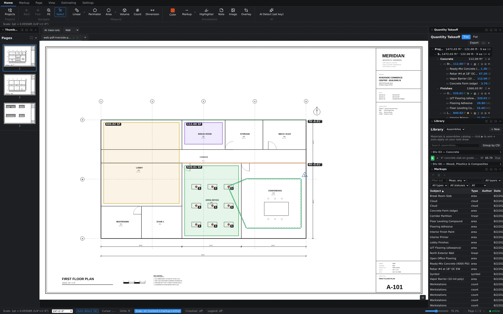

One grid for everything on the sheets
The Markups panel lists everything you've placed — areas, linears, counts, revision clouds, deltas, notes — as rows in a sortable grid with Subject, Type, Author, and Date columns. Click a header to sort. It's the fastest way to answer questions like "what did we measure on this sheet?" or "which markups landed yesterday?"

Filter by any column
The filter row across the top narrows the grid live:
- Subject — a text filter; type "flooring" and only flooring rows remain.
- Measurement — a comparator filter (the "Meas:" control), so you can isolate rows above or below a quantity threshold.
- Layers, types, and statuses — dropdowns that default to All; pick a layer or a markup type to focus the list.
- Scope — flip between All, Takeoffs (measurements only), and Markups (review annotations only).
Filters stack, so "area takeoffs, this layer, subject contains slab" is three quick inputs, not an export-and-spreadsheet detour.
Save the views you use
A filter combination you build every morning is worth keeping. Saved views store the whole setup — filters, sort, and visible columns — so returning to "my counts, newest first" is one click. Save views for the project or for a single document, whichever matches how you review.
Running totals as you filter
As the filtered set changes, the grid keeps running totals of the measurements in view. Filter down to a subject and read its total quantity straight off the panel — a live sanity check that beats re-selecting shapes on the canvas to add them up.
Jump from row to sheet
Every row knows where it lives. Jump from a row and the canvas navigates to that markup and flashes it so your eye lands on the right shape immediately — even on a dense sheet with dozens of overlapping takeoffs. Working a punch-list style review becomes: sort by date, walk the rows, jump, verify, next.
Built for big projects
Two details keep the grid workable at scale. A column chooser lets you hide what you don't need and keep the row compact. And the rows themselves are virtualized — only what's on screen is rendered — so scrolling stays smooth even when a full plan set puts thousands of markups in the list.